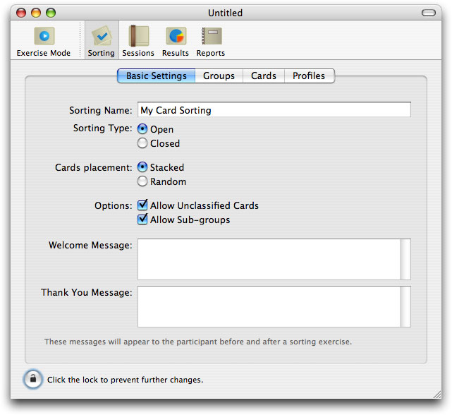

The first thing you need to do is to define a card sorting exercise, by choosing the settings that are adequate for your exercise, defining the groups, cards and participant profiles.
1. Launch xSort, or choose New from the File menu
xSort will create a new document, and present the following window.
2. Type the name of your card sorting exercise on the Sorting Name field
If you cannot write on the Sorting Name field, make sure the sorting settings are unlocked by clicking on the lock button on the bottom of the window.
3. Choose the sorting type by clicking on the Sorting Type radio buttons
A closed sorting forces the participant to use the groups defined by you. An open sorting allows the users to define their own groups. A semi-open sorting suggests the groups defined by you to the participant, but does not prevent the participant to create or remove groups. If you want to conduct a semi-open exercise, choose Open.
4. Choose how do you prefer to place the cards on the table when the exercise starts.
If you choose Stacked, the cards will be placed on a stack at the right lower corner of the table. The Random option will place the cards in random positions using all the table surface. The groups will always appear near the table top.
5. Set the exercise options appropriately.
Allow Unclassified Cards, if turned off, forces the participants to classify all the cards before finishing a session.
Allow Sub-Groups, if turned on, allows the participant to place groups inside other groups, up to 5 group levels. This is useful if you want to allow participants to organize the information in an hierarchy.
6. Write the Welcome Message and the Thank You Message.
These messages will be presented to the participant before and after the exercise. The Welcome Message should introduce the participant to the exercise. On the Thank You message you should appreciate the participant’s help. It’s also recommended that you remind the user that no personal data has been registered.
You may format the text on these message using the Font and Text menus. You may also drag and drop images on it.
7. Click on the Groups tab. Add the groups you need.
If you are conducting a semi-open or closed sorting, create as many groups as you want on this tab. Use the “+” button to add a new group, and the “-” button to remove the selected groups. Alternatively, you may double-click on the group list to add a new group, and press the delete key to remove selected groups. You should type in a name and a small description for each group. You may also create sub-groups, by dragging groups and dropping them on other groups, so you can build an hierarchy. xSort support up to 5 group levels.
The window will look like the following one.
8. Click on the Cards tab. Add the cards you need.
Add cards in a similar fashion as the one described in the last step. Try to use unambiguous names for the cards.
9. Click on the Profiles tab
Define profiles for your participants. A profile is a set of participants that share the same characteristics. You may later analyze the results of each profile, or combinations of profiles.
You must define at least one profile. The window will look like the following one.
10. Choose Save on the File menu to save your exercise to a xSort document.
11. (Optionally) Choose Change Security Settings... from the Exercise menu. Define a password to protect your document.
The password protection is used to avoid a participant to do anything else than a session. If you protect your document with a password, you will need to type it to exit the session mode.
After you have defined your exercise settings, you should lock them by clicking on the lock button on the bottom of the window. xSort will lock them for you if you click on any button on the toolbar besides Sorting.
Locking the exercise settings is important for two reasons. First, it avoids an accidental change. Second, it tells xSort you are done with defining the exercise. This is important, because all the sessions must be done with the same exercise settings. If you changed the settings between two sessions, the results would not be coherent.
To lock the exercise settings, click the lock button.
To unlock the exercise settings, click the lock button again.
Note that, if you have sessions saved on your document, xSort will warn you that all the sessions will be removed before unlocking the settings. You may cancel the operation. If you really want to unlock and change the exercise settings, and want to preserve the results acquired so far, you should create one or more reports. Read the next chapters to know how to create them.
xSort is capable of importing and exporting documents in XML format. This allows you to change documents with other card sorting systems that eventually know how to read XML files.
To export a document in XML format:
1. Choose XML Document... from the Export sub-menu in the File menu.
2. Use the Mac OS X save panel to choose a filename and location for the XML file.
Note that the XML document will contain the problem definition and all the card sorting sessions contained in the document (how to conduct a card sorting session is explained in the next chapter).
To import data from a document in XML format:
1. Choose XML Document... from the Import sub-menu in the File menu.
2. Use the Mac OS X open panel to locate the file that contains the data you want to import.
xSort will create a new document, containing all the data found inside the XML document.
xSort allows the user to import data from CSV (Comma Separated Values) files. This files are easily created and edited manually, and handled by many applications including Microsoft Excel.
You may import lists of cards, groups and profiles from a CSV file. The first column of the data is used for the entity name, and the second for the description, if it applies. Following is an example of a CSV file:

To import a CSV file:
1. Choose Data from CSV... from the Import sub-menu in the File menu.
2. Choose a CSV file.
You may choose the regular or Microsoft Excel CSV format. The regular format uses a dot (.) as the decimal separator and a comma (,) as the values separator. The Excel format depends on the localization system settings of your mac. If the dot is used on your country as the decimal separator, Excel will work with regular CSV files. If the comma is used, Excel uses the comma as the decimal separator and a semicolon (;) as the value separator. Choose the option more appropriate for your needs.
3. Choose what kind of data you want to import, and the lines you want.
You may choose to import only some of the items, using the checkboxes on the “Import” column. If xSort finds any errors during import, they will be presented below the table. If you select groups, note that you may import only one level of groups. You may, after importing, re-arrange the groups as you wish.